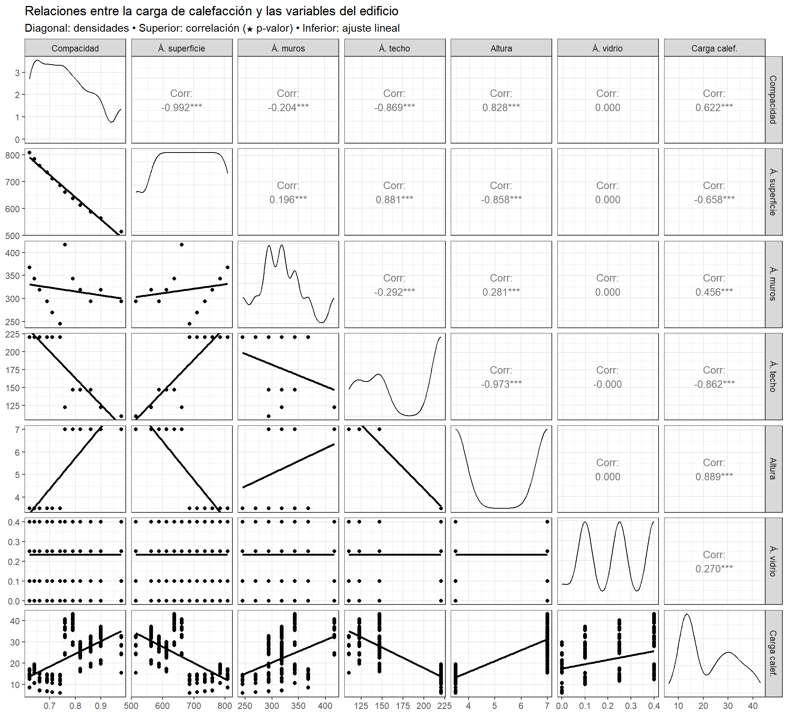
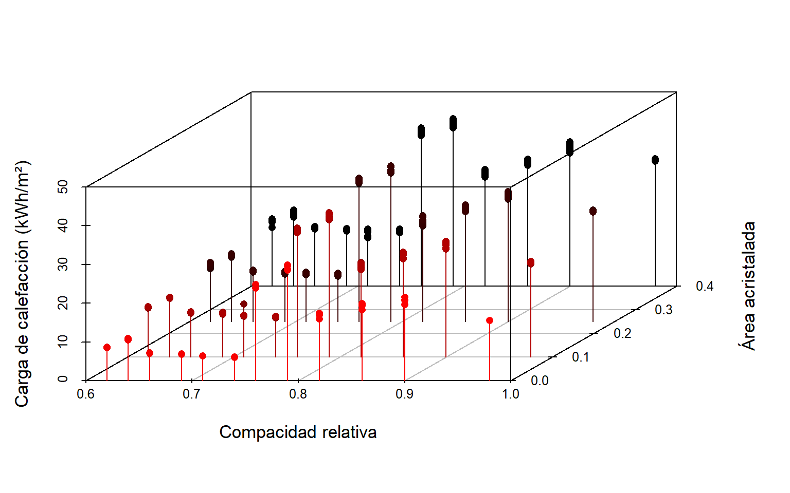
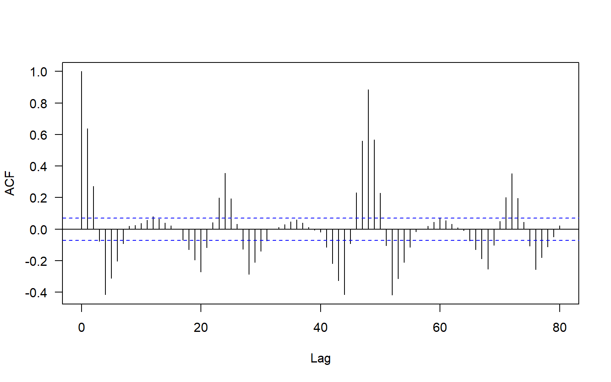
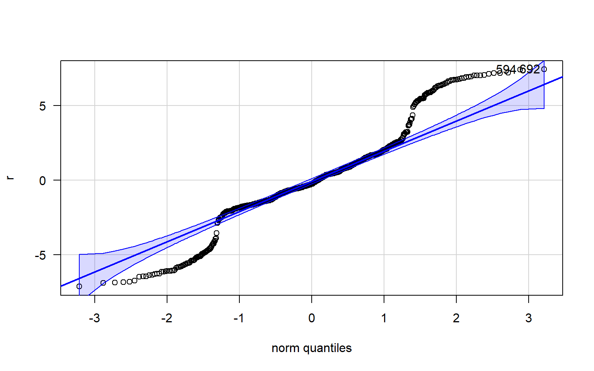
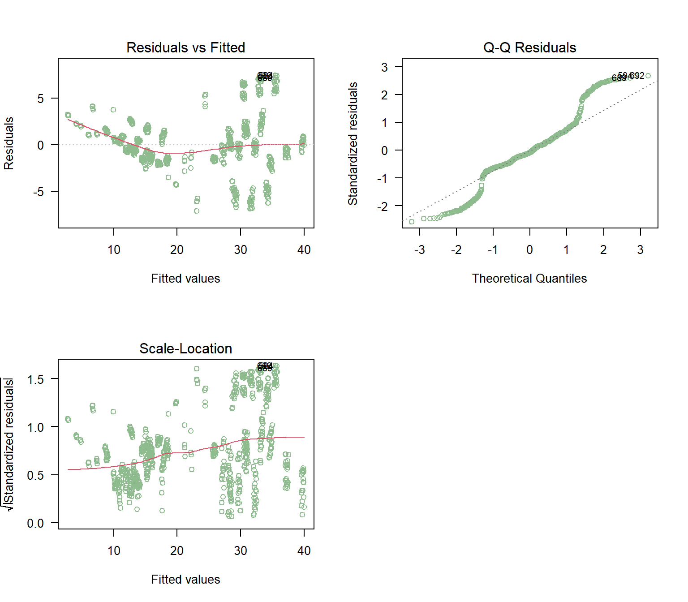
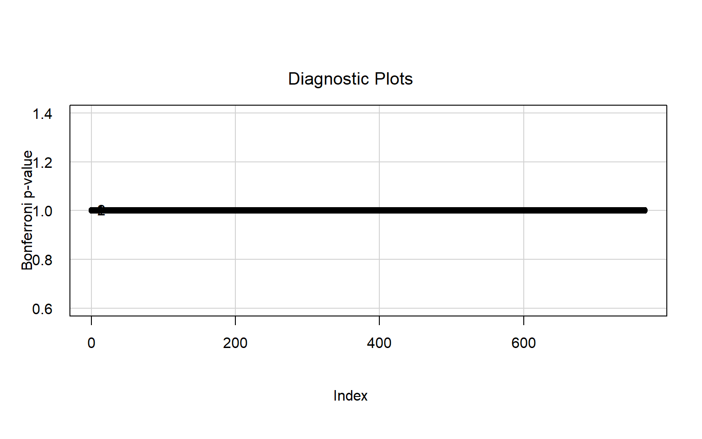
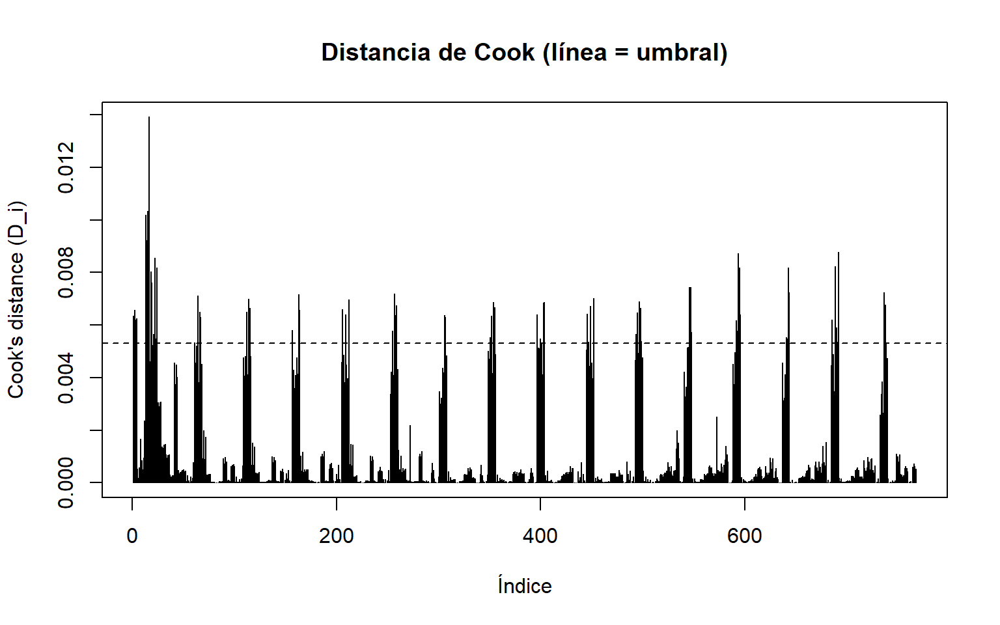
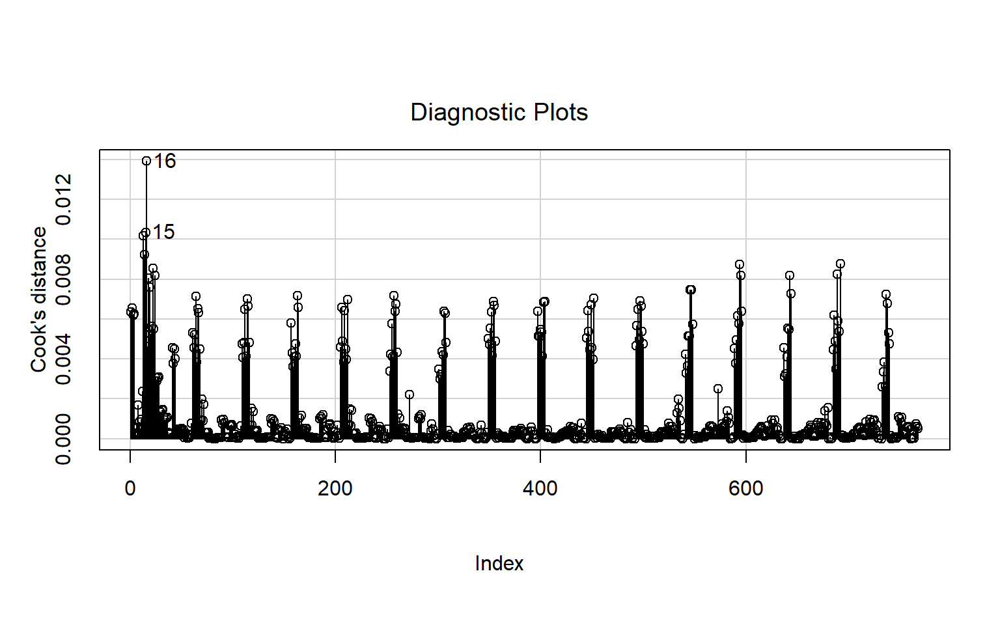
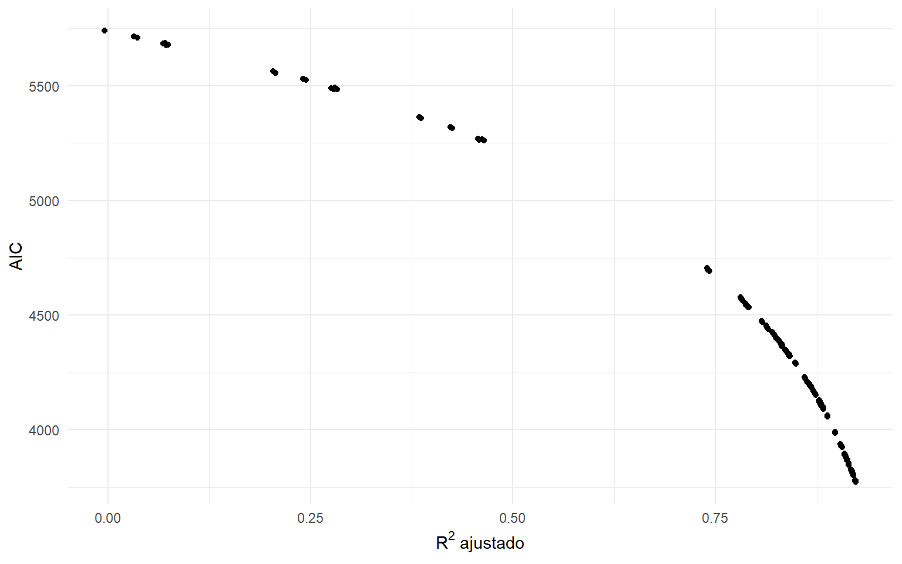

Chapter 9 Regresión lineal múltiple (RLM)
9.1 Preparación de los datos y exploración
Para la RLM, orientacion y dist_vidrio se convierten en factores, porque son categorías y no cantidades. La carga de refrigeración se deja por fuera.
df_rlm <- df %>%
dplyr::select(-carga_refri) %>%
mutate(orientacion = factor(orientacion),
dist_vidrio = factor(dist_vidrio))
str(df_rlm)## tibble [768 × 9] (S3: tbl_df/tbl/data.frame)
## $ compacidad : num [1:768] 0.98 0.98 0.98 0.98 0.9 0.9 0.9 0.9 0.86 0.86 ...
## $ area_superficie: num [1:768] 514 514 514 514 564 ...
## $ area_muros : num [1:768] 294 294 294 294 318 ...
## $ area_techo : num [1:768] 110 110 110 110 122 ...
## $ altura : num [1:768] 7 7 7 7 7 7 7 7 7 7 ...
## $ orientacion : Factor w/ 4 levels "2","3","4","5": 1 2 3 4 1 2 3 4 1 2 ...
## $ area_vidrio : num [1:768] 0 0 0 0 0 0 0 0 0 0 ...
## $ dist_vidrio : Factor w/ 6 levels "0","1","2","3",..: 1 1 1 1 1 1 1 1 1 1 ...
## $ carga_calef : num [1:768] 15.6 15.6 15.6 15.6 20.8 ...# Etiquetas para ejes/paneles
labs_cols <- c("compacidad" = "Compacidad",
"area_superficie" = "Á. superficie",
"area_muros" = "Á. muros",
"area_techo" = "Á. techo",
"altura" = "Altura",
"area_vidrio" = "Á. vidrio",
"carga_calef" = "Carga calef.")
df_rlm %>%
ggpairs(
columns = names(labs_cols),
columnLabels = labs_cols,
diag = list(continuous = "densityDiag"),
upper = list(continuous = GGally::wrap("cor", method = "pearson", stars = TRUE, size = 3.5)),
lower = list(continuous = GGally::wrap("smooth", method = "lm", se = FALSE))
) +
theme_bw() +
labs(title = "Relaciones entre la carga de calefacción y las variables del edificio",
subtitle = "Diagonal: densidades • Superior: correlación (★ p-valor) • Inferior: ajuste lineal")
Interpretación: la carga de calefacción se relaciona con casi todas las variables de forma del edificio. El problema es que esas variables también están muy relacionadas entre sí (compacidad con superficie −0.99, techo con altura −0.97), así que en el modelo múltiple tendrán que “repartirse” el efecto. El área de vidrio, en cambio, casi no se relaciona con las demás predictoras, lo que la hace muy útil para el modelo.
scatterplot3d(
x = df_rlm$compacidad,
y = df_rlm$area_vidrio,
z = df_rlm$carga_calef,
pch = 16,
color = "steelblue",
type = "h",
highlight.3d = TRUE,
angle = 55,
xlab = "Compacidad relativa",
ylab = "Área acristalada",
zlab = "Carga de calefacción (kWh/m²)",
cex.lab = 1.1
)
plot_ly(
data = df_rlm,
x = ~compacidad,
y = ~area_vidrio,
z = ~carga_calef,
type = "scatter3d",
mode = "markers",
marker = list(size = 3, color = ~carga_calef, colorscale = "Reds", showscale = TRUE)
) %>%
layout(
scene = list(
xaxis = list(title = "Compacidad"),
yaxis = list(title = "Área acristalada"),
zaxis = list(title = "Carga de calefacción")
),
title = "Gráfico 3D interactivo: compacidad, vidrio y carga de calefacción"
)Interpretación: en el espacio tridimensional se ve que la carga sube con la compacidad y también, aunque menos, con la proporción de vidrio. Los puntos más rojos (cargas altas) se concentran donde la compacidad y el vidrio son altos a la vez.
9.2 Ajuste del modelo con todas las variables
modelo_todo <- lm(carga_calef ~ compacidad + area_superficie + area_muros + area_techo +
altura + orientacion + area_vidrio + dist_vidrio,
data = df_rlm)
summary(modelo_todo)##
## Call:
## lm(formula = carga_calef ~ compacidad + area_superficie + area_muros +
## area_techo + altura + orientacion + area_vidrio + dist_vidrio,
## data = df_rlm)
##
## Residuals:
## Min 1Q Median 3Q Max
## -7.1237 -1.4299 -0.2555 1.2972 7.4342
##
## Coefficients: (1 not defined because of singularities)
## Estimate Std. Error t value Pr(>|t|)
## (Intercept) 81.161469 18.189282 4.462 9.36e-06 ***
## compacidad -64.773432 9.832563 -6.588 8.38e-11 ***
## area_superficie -0.087289 0.016317 -5.350 1.17e-07 ***
## area_muros 0.060813 0.006353 9.573 < 2e-16 ***
## area_techo NA NA NA NA
## altura 4.169954 0.322982 12.911 < 2e-16 ***
## orientacion3 0.067812 0.286185 0.237 0.813
## orientacion4 -0.052990 0.286185 -0.185 0.853
## orientacion5 -0.037500 0.286185 -0.131 0.896
## area_vidrio 16.848333 0.853238 19.746 < 2e-16 ***
## dist_vidrio1 4.527653 0.513717 8.814 < 2e-16 ***
## dist_vidrio2 4.435986 0.513717 8.635 < 2e-16 ***
## dist_vidrio3 4.183000 0.513717 8.143 1.60e-15 ***
## dist_vidrio4 4.388208 0.513717 8.542 < 2e-16 ***
## dist_vidrio5 4.182444 0.513717 8.142 1.61e-15 ***
## ---
## Signif. codes: 0 '***' 0.001 '**' 0.01 '*' 0.05 '.' 0.1 ' ' 1
##
## Residual standard error: 2.804 on 754 degrees of freedom
## Multiple R-squared: 0.9241, Adjusted R-squared: 0.9228
## F-statistic: 706 on 13 and 754 DF, p-value: < 2.2e-16Interpretación: el resumen avisa “1 not defined because of singularities”, y el coeficiente de area_techo sale como NA. Esto pasa porque el área de superficie es exactamente la suma del área de muros más dos veces el área del techo (piso + techo):
## [1] TRUESi una variable es una combinación exacta de otras, no aporta información nueva y R no puede separar su efecto. Por eso quitamos area_superficie: su información ya está contenida en los muros y el techo.
modelo_rlm <- lm(carga_calef ~ compacidad + area_muros + area_techo + altura +
orientacion + area_vidrio + dist_vidrio,
data = df_rlm)
summary(modelo_rlm)##
## Call:
## lm(formula = carga_calef ~ compacidad + area_muros + area_techo +
## altura + orientacion + area_vidrio + dist_vidrio, data = df_rlm)
##
## Residuals:
## Min 1Q Median 3Q Max
## -7.1237 -1.4299 -0.2555 1.2972 7.4342
##
## Coefficients:
## Estimate Std. Error t value Pr(>|t|)
## (Intercept) 81.16147 18.18928 4.462 9.36e-06 ***
## compacidad -64.77343 9.83256 -6.588 8.38e-11 ***
## area_muros -0.02648 0.01221 -2.169 0.0304 *
## area_techo -0.17458 0.03263 -5.350 1.17e-07 ***
## altura 4.16995 0.32298 12.911 < 2e-16 ***
## orientacion3 0.06781 0.28618 0.237 0.8128
## orientacion4 -0.05299 0.28618 -0.185 0.8532
## orientacion5 -0.03750 0.28618 -0.131 0.8958
## area_vidrio 16.84833 0.85324 19.746 < 2e-16 ***
## dist_vidrio1 4.52765 0.51372 8.814 < 2e-16 ***
## dist_vidrio2 4.43599 0.51372 8.635 < 2e-16 ***
## dist_vidrio3 4.18300 0.51372 8.143 1.60e-15 ***
## dist_vidrio4 4.38821 0.51372 8.542 < 2e-16 ***
## dist_vidrio5 4.18244 0.51372 8.142 1.61e-15 ***
## ---
## Signif. codes: 0 '***' 0.001 '**' 0.01 '*' 0.05 '.' 0.1 ' ' 1
##
## Residual standard error: 2.804 on 754 degrees of freedom
## Multiple R-squared: 0.9241, Adjusted R-squared: 0.9228
## F-statistic: 706 on 13 and 754 DF, p-value: < 2.2e-16Interpretación de los coeficientes (cada efecto se lee manteniendo constantes las demás variables):
- Altura (4.17): cada metro adicional de altura aumenta la carga en 4.17 kWh/m². Pasar de un piso (3.5 m) a dos pisos (7 m) suma unos 14.6 kWh/m². Es uno de los efectos más fuertes (t = 12.9).
- Área de vidrio (16.85): como la variable es una proporción, conviene leerla en pasos de 10 puntos porcentuales: cada 10 % más de fachada en vidrio suma unos 1.68 kWh/m² de calefacción. Es el efecto con el estadístico t más alto (19.7).
- Distribución del vidrio (≈ 4.2 a 4.5): frente a la categoría 0 (sin vidrio), cualquier distribución de ventanas suma entre 4.18 y 4.53 kWh/m², y las cinco categorías se parecen mucho. Como la categoría 0 coincide con los edificios sin ventanas, este coeficiente mide sobre todo el efecto de tener o no tener ventanas, más allá de cuánta área ocupan.
- Compacidad (−64.77): con lo demás fijo, un aumento de 0.1 en la compacidad reduce la carga en unos 6.5 kWh/m².
- Área de techo (−0.175): cada m² más de techo reduce la carga en 0.17 kWh/m².
- Área de muros (−0.026): su efecto es pequeño y apenas significativo (p = 0.03). Su signo es negativo, aunque su correlación con la carga era positiva (0.456). Ese cambio de signo es una señal típica de multicolinealidad: al estar tan ligada a la compacidad y al techo, su coeficiente pierde una lectura física clara.
- Orientación (3, 4 y 5 frente a 2): ningún coeficiente es significativo (p > 0.8). Como ya vimos en Kruskal-Wallis y en la tabla de contingencia, la orientación no influye.
9.3 Prueba de significancia global
- \(H_0\): \(\beta_1 = \beta_2 = \dots = \beta_k = 0\) (ninguna variable sirve para explicar la carga).
- \(H_1\): al menos un \(\beta_j \neq 0\).
## value numdf dendf
## 705.9909 13.0000 754.0000Interpretación: con F = 706 (13 y 754 grados de libertad) y un p-valor prácticamente cero, se rechaza \(H_0\). El modelo, en conjunto, explica la carga de calefacción mucho mejor que el promedio.
9.4 Pruebas individuales e intervalos de confianza
## Estimate Std. Error t value Pr(>|t|)
## (Intercept) 81.16146886 18.18928221 4.4620490 9.356213e-06
## compacidad -64.77343189 9.83256270 -6.5876449 8.383264e-11
## area_muros -0.02647614 0.01220623 -2.1690678 3.038938e-02
## area_techo -0.17457874 0.03263456 -5.3495044 1.170703e-07
## altura 4.16995371 0.32298221 12.9107843 1.349528e-34
## orientacion3 0.06781250 0.28618460 0.2369537 8.127571e-01
## orientacion4 -0.05298958 0.28618460 -0.1851588 8.531543e-01
## orientacion5 -0.03750000 0.28618460 -0.1310343 8.957831e-01
## area_vidrio 16.84833333 0.85323762 19.7463555 2.816825e-70
## dist_vidrio1 4.52765278 0.51371707 8.8135143 8.287164e-18
## dist_vidrio2 4.43598611 0.51371707 8.6350763 3.470133e-17
## dist_vidrio3 4.18300000 0.51371707 8.1426143 1.599122e-15
## dist_vidrio4 4.38820833 0.51371707 8.5420722 7.252690e-17
## dist_vidrio5 4.18244444 0.51371707 8.1415329 1.612308e-15## 2.5 % 97.5 %
## (Intercept) 45.51113083 116.811806894
## compacidad -84.04490066 -45.501963119
## area_muros -0.05039992 -0.002552369
## area_techo -0.23854130 -0.110616170
## altura 3.53692020 4.802987218
## orientacion3 -0.49309900 0.628724003
## orientacion4 -0.61390109 0.507921920
## orientacion5 -0.59841150 0.523411503
## area_vidrio 15.17601833 18.520648333
## dist_vidrio1 3.52078582 5.534519740
## dist_vidrio2 3.42911915 5.442853073
## dist_vidrio3 3.17613304 5.189866962
## dist_vidrio4 3.38134137 5.395075295
## dist_vidrio5 3.17557748 5.189311406Interpretación: todas las variables tienen intervalos que no contienen el cero (son significativas), excepto los tres coeficientes de orientación, cuyos intervalos van de valores negativos a positivos (por ejemplo, de −0.49 a 0.63 para la orientación 3). Algunos ejemplos en palabras:
- Con un 95 % de confianza, cada metro más de altura aumenta la carga entre 3.54 y 4.80 kWh/m².
- El efecto del área de vidrio está entre 15.18 y 18.52, es decir, entre 1.5 y 1.9 kWh/m² por cada 10 % de vidrio adicional.
- El área de muros tiene un intervalo muy cercano a cero (−0.050 a −0.003): su efecto es real, pero pequeño.
9.5 Coeficiente de determinación R² y R² ajustado
## [1] 0.9240829## [1] 0.9227739## [1] 2.804025Interpretación: el modelo explica el 92.4 % de la variación en la carga de calefacción (R² ajustado = 0.923). Es un salto enorme frente al 74 % de la regresión simple. Además, el error típico de predicción bajó de 5.12 a 2.80 kWh/m², casi la mitad. Que el R² y el R² ajustado sean casi iguales indica que el modelo no está “inflado” por meter variables de más.
9.6 Inferencia para la respuesta
Tomemos un edificio con las características de uno real de la base: compacidad 0.76, 416.5 m² de muros, 122.5 m² de techo, dos pisos (7 m), orientación norte (2), 25 % de vidrio distribuido hacia el este (3).
dato_nuevo <- data.frame(
compacidad = 0.76,
area_muros = 416.5,
area_techo = 122.5,
altura = 7,
orientacion = factor(2, levels = levels(df_rlm$orientacion)),
area_vidrio = 0.25,
dist_vidrio = factor(3, levels = levels(df_rlm$dist_vidrio))
)
predict(modelo_rlm, newdata = dato_nuevo)## 1
## 37.10521## fit lwr upr
## 1 37.10521 36.26627 37.94415## fit lwr upr
## 1 37.10521 31.53702 42.6734Interpretación: para un edificio con estas características, el modelo estima una carga de calefacción de 37.11 kWh/m².
- Con un 95 % de confianza, la carga media de todos los edificios con este diseño está entre 36.27 y 37.94 kWh/m².
- Si construimos un edificio así, su carga estará entre 31.54 y 42.67 kWh/m².
En la base, el edificio real con estas características (orientación norte) tiene una carga de 35.99 kWh/m². Cae dentro del intervalo de predicción, aunque el modelo lo sobreestima en poco más de 1 kWh/m². Comparado con la RLS, el intervalo de predicción pasó de unos 20 a unos 11 kWh/m² de ancho: el modelo múltiple predice mucho mejor.
9.7 Análisis de residuales y validación de supuestos
## lag Autocorrelation D-W Statistic p-value
## 1 0.6371652 0.7221218 0
## Alternative hypothesis: rho != 0
Interpretación: el estadístico de Durbin-Watson mejoró (de 0.31 a 0.72), pero sigue lejos de 2 y el p-valor es prácticamente cero: persiste la autocorrelación. Como en la RLS, se debe sobre todo al orden del archivo: las cuatro orientaciones de un mismo edificio van en filas seguidas y tienen residuos casi iguales, porque la orientación no cambia la carga.
##
## Shapiro-Wilk normality test
##
## data: r
## W = 0.94813, p-value = 8.988e-16
## [1] 692 594Interpretación: con W = 0.948 y p < 0.001, los residuos no son normales. El Q-Q plot muestra que las colas se separan de la recta. Con 768 observaciones, las pruebas sobre los coeficientes siguen siendo bastante confiables, pero esto es una limitación que hay que reportar.
##
## One Sample t-test
##
## data: r
## t = 5.0725e-16, df = 767, p-value = 1
## alternative hypothesis: true mean is not equal to 0
## 95 percent confidence interval:
## -0.1969351 0.1969351
## sample estimates:
## mean of x
## 5.088776e-17Interpretación: p = 1, así que la media de los errores es cero. Este supuesto se cumple.
##
## studentized Breusch-Pagan test
##
## data: modelo_rlm
## BP = 377.62, df = 13, p-value < 2.2e-16Interpretación: con BP = 377.6 y p-valor prácticamente cero, hay heterocedasticidad: el tamaño de los errores cambia según el tipo de edificio.
par(mfrow = c(2, 2))
plot(modelo_rlm, las = 1, col = 'darkseagreen', which = 1:3)
par(mfrow = c(1, 1))
Interpretación: en Residuals vs Fitted los residuos no forman una nube pareja: hay grupos de puntos y la línea roja no es completamente plana, lo que sugiere que alguna relación no es del todo lineal. En el Q-Q se ve la falta de normalidad en las colas. Scale-Location confirma que la dispersión cambia a lo largo de los valores ajustados. El modelo predice muy bien, pero no cumple todos los supuestos clásicos.
9.8 Identificación de outliers
## named integer(0)## No Studentized residuals with Bonferroni p < 0.05
## Largest |rstudent|:
## rstudent unadjusted p-value Bonferroni p
## 692 2.684929 0.0074141 NA
Interpretación: ningún residuo estudentizado supera ±3 (el más grande ronda 2.7), y la prueba de Bonferroni no encuentra ningún outlier significativo. R lo dice con el mensaje “No Studentized residuals with Bonferroni p < 0.05”, y el p de Bonferroni del residuo más grande sale como NA porque supera 1. En la gráfica de índices, todos los p-valores están arriba, cerca de 1. No hay edificios atípicos que el modelo explique mal de forma exagerada.
9.9 Identificación de observaciones influenciales
# 1) Distancia de Cook
Di <- cooks.distance(modelo_rlm)
# 2) Umbral
n <- nobs(modelo_rlm)
p <- length(coef(modelo_rlm))
umbral <- 4/(n - p - 2)
# 3) Índices por encima del umbral
infl_idx <- which(Di > umbral)
length(infl_idx)## [1] 70# 4) Tabla ordenada
ord <- order(Di, decreasing = TRUE)
tab <- data.frame(
idx = ord,
cooks_distance = Di[ord],
supera_umbral = Di[ord] > umbral
)
head(tab, 10)## idx cooks_distance supera_umbral
## 16 16 0.013926391 TRUE
## 15 15 0.010339773 TRUE
## 13 13 0.010182002 TRUE
## 14 14 0.009228595 TRUE
## 692 692 0.008773564 TRUE
## 594 594 0.008742693 TRUE
## 22 22 0.008547540 TRUE
## 689 689 0.008244807 TRUE
## 643 643 0.008194997 TRUE
## 595 595 0.008188187 TRUEplot(Di, type = "h",
ylab = "Cook's distance (D_i)", xlab = "Índice",
main = "Distancia de Cook (línea = umbral)")
abline(h = umbral, lty = 2)

Interpretación: con el umbral 4/(n − p − 2) ≈ 0.0053, unas 70 observaciones quedan marcadas como influyentes, entre ellas las 13 a 16 y la 22. Sin embargo, la distancia de Cook más grande ronda apenas 0.014, muy lejos de 1. Con 768 datos el umbral es tan bajo que marca muchas observaciones, pero ninguna tiene por sí sola el peso suficiente para cambiar el modelo. No hay razones para eliminar edificios.
9.10 Análisis de multicolinealidad
## [1] 59168.14Interpretación: el número de condición es κ ≈ 59 168, muchísimo mayor que 30. Hay multicolinealidad severa.
## GVIF Df GVIF^(1/(2*Df))
## compacidad 105.524054 1 10.272490
## area_muros 27.662740 1 5.259538
## area_techo 211.938336 1 14.558102
## altura 31.205474 1 5.586186
## orientacion 1.000000 3 1.000000
## area_vidrio 1.260417 1 1.122683
## dist_vidrio 1.260417 5 1.023414Interpretación: como hay factores, R muestra el GVIF (la versión generalizada del VIF). Los valores problemáticos son el área de techo (≈ 212), la compacidad (≈ 106), la altura (≈ 31) y el área de muros (≈ 28), todos muy por encima de 10. La orientación, el área de vidrio y su distribución tienen valores cercanos a 1, sin problema. En palabras simples: las cuatro variables de forma del edificio cuentan casi la misma historia. Un edificio de un piso tiene, a la vez, más techo, menos altura y otra compacidad. Por eso sus coeficientes individuales son inestables (como el cambio de signo del área de muros), aunque el modelo en conjunto predice muy bien.
##
## Call:
## omcdiag(mod = mod, Inter = Inter, detr = detr, red = red, conf = conf,
## theil = theil, cn = cn)
##
##
## Overall Multicollinearity Diagnostics
##
## MC Results detection
## Determinant |X'X|: 0.0000 1
## Farrar Chi-Square: 7734.3377 1
## Red Indicator: 0.2110 0
## Sum of Lambda Inverse: 401.7264 1
## Theil's Method: -2.2380 0
## Condition Number: 559.8007 1
##
## 1 --> COLLINEARITY is detected by the test
## 0 --> COLLINEARITY is not detected by the test
##
##
## ===================================
##
## Call:
## imcdiag(mod = mod, method = method, corr = FALSE, vif = vif,
## tol = tol, conf = conf, cvif = cvif, ind1 = ind1, ind2 = ind2,
## leamer = leamer, all = all)
##
##
## All Individual Multicollinearity Diagnostics Result
##
## VIF TOL Wi Fi Leamer CVIF Klein IND1
## compacidad 105.5241 0.0095 6576.3051 7183.6532 0.0973 -6.6482 1 0.0002
## area_muros 27.6627 0.0361 1677.5307 1832.4574 0.1901 -1.7428 1 0.0006
## area_techo 211.9383 0.0047 13271.5370 14497.2165 0.0687 -13.3525 1 0.0001
## altura 31.2055 0.0320 1900.4278 2075.9399 0.1790 -1.9660 1 0.0005
## orientacion3 1.5000 0.6667 31.4583 34.3636 0.8165 -0.0945 0 0.0106
## orientacion4 1.5000 0.6667 31.4583 34.3636 0.8165 -0.0945 0 0.0106
## orientacion5 1.5000 0.6667 31.4583 34.3636 0.8165 -0.0945 0 0.0106
## area_vidrio 1.2604 0.7934 16.3845 17.8977 0.8907 -0.0794 0 0.0126
## dist_vidrio1 3.9271 0.2546 184.1623 201.1705 0.5046 -0.2474 0 0.0040
## dist_vidrio2 3.9271 0.2546 184.1623 201.1705 0.5046 -0.2474 0 0.0040
## dist_vidrio3 3.9271 0.2546 184.1623 201.1705 0.5046 -0.2474 0 0.0040
## dist_vidrio4 3.9271 0.2546 184.1623 201.1705 0.5046 -0.2474 0 0.0040
## dist_vidrio5 3.9271 0.2546 184.1623 201.1705 0.5046 -0.2474 0 0.0040
## IND2
## compacidad 1.4548
## area_muros 1.4157
## area_techo 1.4618
## altura 1.4217
## orientacion3 0.4896
## orientacion4 0.4896
## orientacion5 0.4896
## area_vidrio 0.3035
## dist_vidrio1 1.0948
## dist_vidrio2 1.0948
## dist_vidrio3 1.0948
## dist_vidrio4 1.0948
## dist_vidrio5 1.0948
##
## 1 --> COLLINEARITY is detected by the test
## 0 --> COLLINEARITY is not detected by the test
##
## orientacion3 , orientacion4 , orientacion5 , coefficient(s) are non-significant may be due to multicollinearity
##
## R-square of y on all x: 0.9241
##
## * use method argument to check which regressors may be the reason of collinearity
## ===================================Interpretación: las pruebas globales e individuales de mctest confirman lo anterior: se detecta colinealidad. En la parte individual, las variables marcadas con 1 son las de forma del edificio (compacidad, muros, techo y altura), las mismas que tenían VIF altos.
9.11 Modelos con variables cualitativas (variables dummy)
orientacion y dist_vidrio entraron al modelo como factores. R las convierte en variables dummy (0/1) y toma la primera categoría como referencia. Veamos cómo queda la matriz de diseño para la orientación:
## (Intercept) orientacion3 orientacion4 orientacion5
## 1 1 0 0 0
## 2 1 1 0 0
## 3 1 0 1 0
## 4 1 0 0 1
## 5 1 0 0 0
## 6 1 1 0 0Interpretación: la orientación 2 (norte) es la categoría de referencia (filas con ceros en las tres dummies). Cada coeficiente de orientación en el modelo mide cuánto cambia la carga frente al norte.
##
## Call:
## lm(formula = carga_calef ~ orientacion, data = df_rlm)
##
## Residuals:
## Min 1Q Median 3Q Max
## -16.331 -9.341 -3.310 9.370 20.719
##
## Coefficients:
## Estimate Std. Error t value Pr(>|t|)
## (Intercept) 22.31286 0.72962 30.582 <2e-16 ***
## orientacion3 0.06781 1.03184 0.066 0.948
## orientacion4 -0.05299 1.03184 -0.051 0.959
## orientacion5 -0.03750 1.03184 -0.036 0.971
## ---
## Signif. codes: 0 '***' 0.001 '**' 0.01 '*' 0.05 '.' 0.1 ' ' 1
##
## Residual standard error: 10.11 on 764 degrees of freedom
## Multiple R-squared: 2.135e-05, Adjusted R-squared: -0.003905
## F-statistic: 0.005438 on 3 and 764 DF, p-value: 0.9994Interpretación: el intercepto (22.31) es la carga media de los edificios orientados al norte, y las otras orientaciones difieren de ella en menos de 0.07 kWh/m². Ningún coeficiente es significativo, el R² es prácticamente 0 y la prueba F global da p = 0.999. La orientación sola no explica nada de la carga de calefacción. En cambio, las dummies de dist_vidrio sí resultaron significativas en el modelo múltiple: tener ventanas (con cualquier distribución) suma unos 4.2 a 4.5 kWh/m² frente a no tenerlas.
9.12 Selección de variables
9.12.1 Método de todas las regresiones posibles
## [1] 127Interpretación: con 7 variables candidatas, se evaluaron 127 modelos posibles.
## mindex n predictors
## 122 120 6 compacidad area_muros area_techo altura area_vidrio dist_vidrio
## rsquare adjr rmse predrsq cp aic sbic sbc
## 122 0.9240615 0.9230584 2.798857 0.9219093 8.212062 3773.278 1594.19 3829.004
## msep fpe apc hsp
## 122 7.947553 7.945799 0.07814542 0.0103619## mindex n predictors
## 122 120 6 compacidad area_muros area_techo altura area_vidrio dist_vidrio
## rsquare adjr rmse predrsq cp aic sbic sbc
## 122 0.9240615 0.9230584 2.798857 0.9219093 8.212062 3773.278 1594.19 3829.004
## msep fpe apc hsp
## 122 7.947553 7.945799 0.07814542 0.0103619## mindex n predictors
## 122 120 6 compacidad area_muros area_techo altura area_vidrio dist_vidrio
## rsquare adjr rmse predrsq cp aic sbic sbc
## 122 0.9240615 0.9230584 2.798857 0.9219093 8.212062 3773.278 1594.19 3829.004
## msep fpe apc hsp
## 122 7.947553 7.945799 0.07814542 0.0103619Interpretación: con el R² ajustado y con el AIC, el modelo elegido es el mismo: compacidad area_muros area_techo altura area_vidrio dist_vidrio. Es decir, el mejor modelo es el que deja por fuera la orientación: tiene el R² ajustado más alto (≈ 0.923) y el AIC más bajo (≈ 3773). Con el criterio de Cp, el modelo elegido es compacidad area_muros area_techo altura area_vidrio dist_vidrio, que coincide con los dos anteriores.
ggplot(results, aes(x = adjr, y = aic)) +
geom_point() +
theme_minimal() +
xlab(expression(R^2 * " ajustado")) +
ylab("AIC")
## n
## 111 5
## 107 5
## 122 6
## 125 6
## 127 7
## predictors
## 111 compacidad area_techo altura area_vidrio dist_vidrio
## 107 compacidad area_muros altura area_vidrio dist_vidrio
## 122 compacidad area_muros area_techo altura area_vidrio dist_vidrio
## 125 compacidad area_techo altura orientacion area_vidrio dist_vidrio
## 127 compacidad area_muros area_techo altura orientacion area_vidrio dist_vidrio
## rsquare adjr rmse predrsq cp aic
## 111 0.9235878 0.9226805 2.805720 0.9214867 10.916917 3776.054
## 107 0.9211802 0.9202443 2.849580 0.9190249 34.829260 3799.879
## 122 0.9240615 0.9230584 2.798857 0.9219093 8.212062 3773.278
## 125 0.9236091 0.9223950 2.810896 0.9208834 16.704855 3781.840
## 127 0.9240829 0.9227739 2.804025 0.9213090 14.000000 3779.062Interpretación: en la esquina inferior derecha del gráfico (R² ajustado alto y AIC bajo) quedan pocos modelos competitivos. Todos incluyen compacidad, altura, área de vidrio y distribución del vidrio, que son las variables que no pueden faltar. Los que agregan la orientación nunca mejoran al que no la tiene.
9.12.2 Selección secuencial
# método forward
modelo_null <- lm(carga_calef ~ 1, data = df_rlm)
modelo_full <- lm(carga_calef ~ compacidad + area_muros + area_techo + altura +
orientacion + area_vidrio + dist_vidrio, data = df_rlm)
sel_forward <- stepAIC(modelo_null,
scope = list(lower = modelo_null,
upper = modelo_full),
direction = "forward", trace = FALSE)
summary(sel_forward)##
## Call:
## lm(formula = carga_calef ~ altura + area_vidrio + area_muros +
## dist_vidrio + compacidad + area_techo, data = df_rlm)
##
## Residuals:
## Min 1Q Median 3Q Max
## -7.155 -1.421 -0.255 1.306 7.495
##
## Coefficients:
## Estimate Std. Error t value Pr(>|t|)
## (Intercept) 81.15580 18.15491 4.470 9.01e-06 ***
## altura 4.16995 0.32239 12.935 < 2e-16 ***
## area_vidrio 16.84833 0.85166 19.783 < 2e-16 ***
## area_muros -0.02648 0.01218 -2.173 0.0301 *
## dist_vidrio1 4.52765 0.51277 8.830 < 2e-16 ***
## dist_vidrio2 4.43599 0.51277 8.651 < 2e-16 ***
## dist_vidrio3 4.18300 0.51277 8.158 1.42e-15 ***
## dist_vidrio4 4.38821 0.51277 8.558 < 2e-16 ***
## dist_vidrio5 4.18244 0.51277 8.157 1.43e-15 ***
## compacidad -64.77343 9.81444 -6.600 7.74e-11 ***
## area_techo -0.17458 0.03257 -5.359 1.11e-07 ***
## ---
## Signif. codes: 0 '***' 0.001 '**' 0.01 '*' 0.05 '.' 0.1 ' ' 1
##
## Residual standard error: 2.799 on 757 degrees of freedom
## Multiple R-squared: 0.9241, Adjusted R-squared: 0.9231
## F-statistic: 921.2 on 10 and 757 DF, p-value: < 2.2e-16# método backward
sel_backward <- stepAIC(modelo_full, direction = "backward",
trace = FALSE)
summary(sel_backward)##
## Call:
## lm(formula = carga_calef ~ compacidad + area_muros + area_techo +
## altura + area_vidrio + dist_vidrio, data = df_rlm)
##
## Residuals:
## Min 1Q Median 3Q Max
## -7.155 -1.421 -0.255 1.306 7.495
##
## Coefficients:
## Estimate Std. Error t value Pr(>|t|)
## (Intercept) 81.15580 18.15491 4.470 9.01e-06 ***
## compacidad -64.77343 9.81444 -6.600 7.74e-11 ***
## area_muros -0.02648 0.01218 -2.173 0.0301 *
## area_techo -0.17458 0.03257 -5.359 1.11e-07 ***
## altura 4.16995 0.32239 12.935 < 2e-16 ***
## area_vidrio 16.84833 0.85166 19.783 < 2e-16 ***
## dist_vidrio1 4.52765 0.51277 8.830 < 2e-16 ***
## dist_vidrio2 4.43599 0.51277 8.651 < 2e-16 ***
## dist_vidrio3 4.18300 0.51277 8.158 1.42e-15 ***
## dist_vidrio4 4.38821 0.51277 8.558 < 2e-16 ***
## dist_vidrio5 4.18244 0.51277 8.157 1.43e-15 ***
## ---
## Signif. codes: 0 '***' 0.001 '**' 0.01 '*' 0.05 '.' 0.1 ' ' 1
##
## Residual standard error: 2.799 on 757 degrees of freedom
## Multiple R-squared: 0.9241, Adjusted R-squared: 0.9231
## F-statistic: 921.2 on 10 and 757 DF, p-value: < 2.2e-16# método stepwise (ambas direcciones)
sel_both <- stepAIC(modelo_null, scope = list(lower = modelo_null,
upper = modelo_full),
direction = "both", trace = FALSE)
summary(sel_both)##
## Call:
## lm(formula = carga_calef ~ altura + area_vidrio + area_muros +
## dist_vidrio + compacidad + area_techo, data = df_rlm)
##
## Residuals:
## Min 1Q Median 3Q Max
## -7.155 -1.421 -0.255 1.306 7.495
##
## Coefficients:
## Estimate Std. Error t value Pr(>|t|)
## (Intercept) 81.15580 18.15491 4.470 9.01e-06 ***
## altura 4.16995 0.32239 12.935 < 2e-16 ***
## area_vidrio 16.84833 0.85166 19.783 < 2e-16 ***
## area_muros -0.02648 0.01218 -2.173 0.0301 *
## dist_vidrio1 4.52765 0.51277 8.830 < 2e-16 ***
## dist_vidrio2 4.43599 0.51277 8.651 < 2e-16 ***
## dist_vidrio3 4.18300 0.51277 8.158 1.42e-15 ***
## dist_vidrio4 4.38821 0.51277 8.558 < 2e-16 ***
## dist_vidrio5 4.18244 0.51277 8.157 1.43e-15 ***
## compacidad -64.77343 9.81444 -6.600 7.74e-11 ***
## area_techo -0.17458 0.03257 -5.359 1.11e-07 ***
## ---
## Signif. codes: 0 '***' 0.001 '**' 0.01 '*' 0.05 '.' 0.1 ' ' 1
##
## Residual standard error: 2.799 on 757 degrees of freedom
## Multiple R-squared: 0.9241, Adjusted R-squared: 0.9231
## F-statistic: 921.2 on 10 and 757 DF, p-value: < 2.2e-16Interpretación: los tres métodos secuenciales llegan al mismo modelo. Forward va agregando variables en este orden de importancia: altura, área de vidrio, área de muros, distribución del vidrio, compacidad y área de techo. Backward parte del modelo completo y solo saca la orientación. Stepwise coincide con forward. Que todos los métodos coincidan, incluido el de todas las regresiones posibles, da mucha confianza en que este es el modelo adecuado.
9.12.3 Comparación de modelos con la prueba F parcial
¿Perdemos algo al quitar la orientación?
- \(H_0\): los coeficientes de la orientación son todos cero (el modelo reducido es suficiente).
- \(H_1\): al menos uno es distinto de cero.
modelo_final <- lm(carga_calef ~ compacidad + area_muros + area_techo + altura +
area_vidrio + dist_vidrio, data = df_rlm)
anova(modelo_rlm, modelo_final)## Analysis of Variance Table
##
## Model 1: carga_calef ~ compacidad + area_muros + area_techo + altura +
## orientacion + area_vidrio + dist_vidrio
## Model 2: carga_calef ~ compacidad + area_muros + area_techo + altura +
## area_vidrio + dist_vidrio
## Res.Df RSS Df Sum of Sq F Pr(>F)
## 1 754 5928.4
## 2 757 5930.0 -3 -1.6674 0.0707 0.9756Interpretación: con F = 0.07 y p = 0.976, no se rechaza \(H_0\): quitar la orientación no empeora el modelo en nada. Es preferible el modelo más sencillo.
¿Y si también quitamos el área de muros, que era la menos significativa?
modelo_sin_muros <- lm(carga_calef ~ compacidad + area_techo + altura +
area_vidrio + dist_vidrio, data = df_rlm)
anova(modelo_final, modelo_sin_muros)## Analysis of Variance Table
##
## Model 1: carga_calef ~ compacidad + area_muros + area_techo + altura +
## area_vidrio + dist_vidrio
## Model 2: carga_calef ~ compacidad + area_techo + altura + area_vidrio +
## dist_vidrio
## Res.Df RSS Df Sum of Sq F Pr(>F)
## 1 757 5930
## 2 758 5967 -1 -36.992 4.7222 0.03008 *
## ---
## Signif. codes: 0 '***' 0.001 '**' 0.01 '*' 0.05 '.' 0.1 ' ' 1Interpretación: aquí el p-valor es 0.030 (< 0.05), así que el área de muros sí aporta y conviene dejarla. Quitarla empeoraría el ajuste de forma significativa, aunque leve.
9.13 Modelo final
##
## Call:
## lm(formula = carga_calef ~ compacidad + area_muros + area_techo +
## altura + area_vidrio + dist_vidrio, data = df_rlm)
##
## Residuals:
## Min 1Q Median 3Q Max
## -7.155 -1.421 -0.255 1.306 7.495
##
## Coefficients:
## Estimate Std. Error t value Pr(>|t|)
## (Intercept) 81.15580 18.15491 4.470 9.01e-06 ***
## compacidad -64.77343 9.81444 -6.600 7.74e-11 ***
## area_muros -0.02648 0.01218 -2.173 0.0301 *
## area_techo -0.17458 0.03257 -5.359 1.11e-07 ***
## altura 4.16995 0.32239 12.935 < 2e-16 ***
## area_vidrio 16.84833 0.85166 19.783 < 2e-16 ***
## dist_vidrio1 4.52765 0.51277 8.830 < 2e-16 ***
## dist_vidrio2 4.43599 0.51277 8.651 < 2e-16 ***
## dist_vidrio3 4.18300 0.51277 8.158 1.42e-15 ***
## dist_vidrio4 4.38821 0.51277 8.558 < 2e-16 ***
## dist_vidrio5 4.18244 0.51277 8.157 1.43e-15 ***
## ---
## Signif. codes: 0 '***' 0.001 '**' 0.01 '*' 0.05 '.' 0.1 ' ' 1
##
## Residual standard error: 2.799 on 757 degrees of freedom
## Multiple R-squared: 0.9241, Adjusted R-squared: 0.9231
## F-statistic: 921.2 on 10 and 757 DF, p-value: < 2.2e-16Interpretación: el modelo final es:
\[ \begin{aligned} \widehat{\text{Carga}} = \; & 81.16 - 64.77\,\text{Compacidad} - 0.026\,\text{Muros} - 0.175\,\text{Techo} \\ & + 4.17\,\text{Altura} + 16.85\,\text{Vidrio} \\ & + 4.53\,D_1 + 4.44\,D_2 + 4.18\,D_3 + 4.39\,D_4 + 4.18\,D_5 \end{aligned} \]
donde \(D_1, \dots, D_5\) son las dummies de la distribución del vidrio (la referencia es 0 = sin vidrio).
- Todas las variables son significativas al 5 %.
- Explica el 92.4 % de la variabilidad (R² ajustado = 0.9231, ligeramente mayor que el del modelo con orientación).
- El error estándar residual es de 2.80 kWh/m².
- Es globalmente significativo (F = 921.2 con 10 y 757 g.l., p-valor prácticamente cero).
Los coeficientes son los mismos del modelo anterior (la orientación no estaba “robando” efecto a nadie), solo cambia ligeramente el intercepto.
dato_nuevo_final <- data.frame(
compacidad = 0.76,
area_muros = 416.5,
area_techo = 122.5,
altura = 7,
area_vidrio = 0.25,
dist_vidrio = factor(3, levels = levels(df_rlm$dist_vidrio))
)
predict(modelo_final, newdata = dato_nuevo_final, interval = "confidence")## fit lwr upr
## 1 37.09954 36.33581 37.86327## fit lwr upr
## 1 37.09954 31.55227 42.64681Interpretación: para el mismo edificio de antes, el modelo final estima 37.10 kWh/m², con un intervalo de confianza para la media de (36.34, 37.86) y un intervalo de predicción de (31.55, 42.65). Ahora la predicción ya no depende de la orientación, lo cual es coherente: en la base, las cuatro versiones de este edificio (una por orientación) tienen cargas reales entre 35.64 y 36.59 kWh/m², todas dentro del intervalo de predicción.
## lag Autocorrelation D-W Statistic p-value
## 1 0.6369084 0.722627 0
## Alternative hypothesis: rho != 0##
## Shapiro-Wilk normality test
##
## data: residuals(modelo_final)
## W = 0.94828, p-value = 9.507e-16##
## studentized Breusch-Pagan test
##
## data: modelo_final
## BP = 377.45, df = 10, p-value < 2.2e-16## GVIF Df GVIF^(1/(2*Df))
## compacidad 105.524054 1 10.272490
## area_muros 27.662740 1 5.259538
## area_techo 211.938336 1 14.558102
## altura 31.205474 1 5.586186
## area_vidrio 1.260417 1 1.122683
## dist_vidrio 1.260417 5 1.023414Interpretación: el modelo final hereda las mismas limitaciones del modelo completo. Hay autocorrelación por el orden del archivo (DW ≈ 0.72), los residuos no son normales (p < 0.001), hay heterocedasticidad (p < 0.001) y hay multicolinealidad fuerte entre las variables de forma (GVIF de techo ≈ 212 y de compacidad ≈ 106). Ninguna de estas fallas afecta la capacidad predictiva del modelo, que es muy buena. Lo que sí afectan es la precisión de los errores estándar y, por tanto, de los intervalos.
Una alternativa para tener en cuenta: igual que en la RLS, probamos transformar la respuesta.
modelo_final_log <- lm(log(carga_calef) ~ compacidad + area_muros + area_techo + altura +
area_vidrio + dist_vidrio, data = df_rlm)
summary(modelo_final_log)$r.squared## [1] 0.9550705##
## Shapiro-Wilk normality test
##
## data: residuals(modelo_final_log)
## W = 0.97421, p-value = 2.15e-10Interpretación: con el logaritmo de la carga, el R² sube a 0.955 y los residuos se acercan más a la normalidad (W pasa de 0.948 a 0.974), aunque todavía no la cumplen. Si el objetivo fuera únicamente predecir, esta versión sería una buena candidata. Para interpretar los efectos en kWh/m², el modelo sin transformar es más directo.